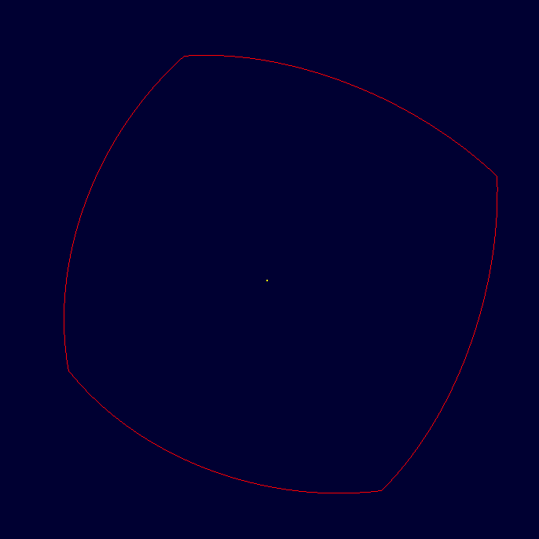
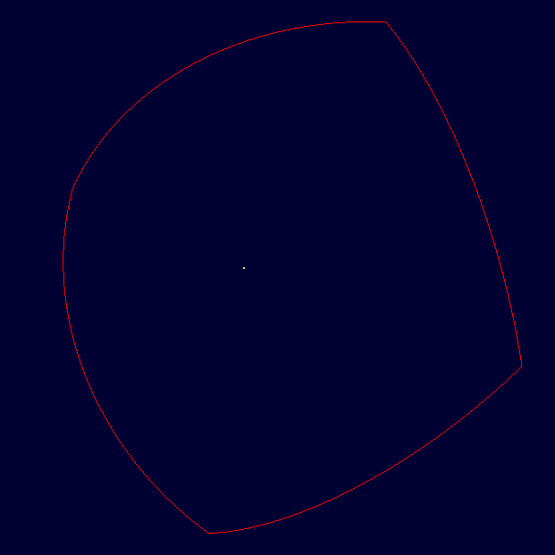
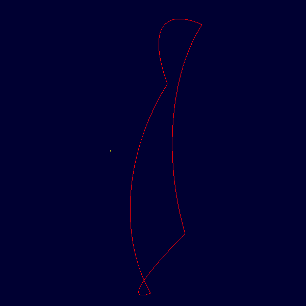
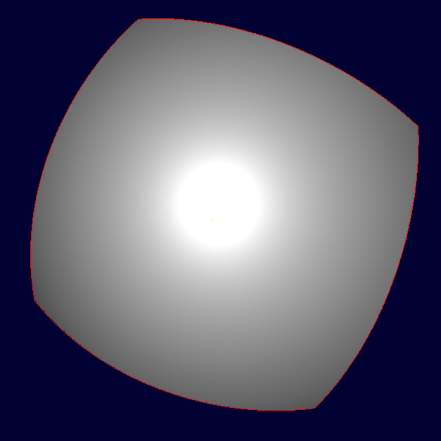
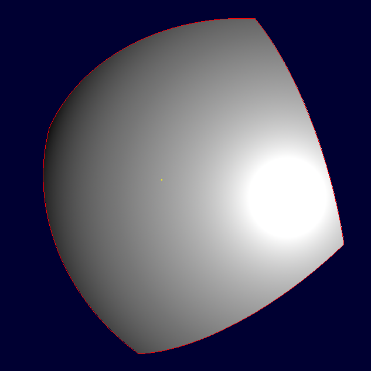
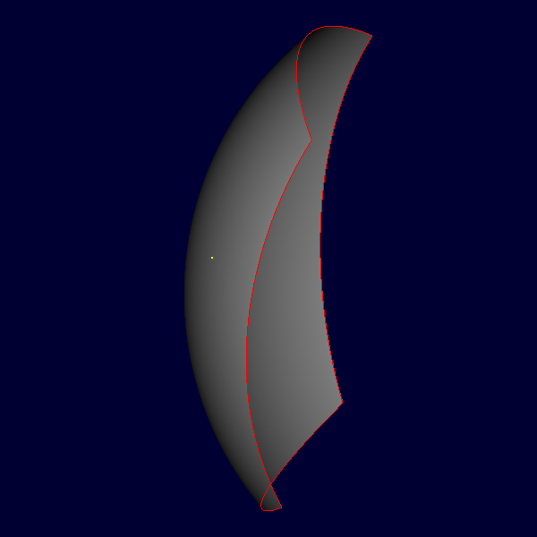

Previously, we have a ray tracing problem of NURBS, shortly speaking, when we pose the NURBS surface in front/side view, after ray tracing, we will get nothing, it seems to be a little bit weird, but I have figured it out now.
Actually, in the old implementation of ray tracing for NURBS surface, if the count of hit points is one, then it will report a miss, because it always considers pairs of hit points(in/out pair) but not the odd number(maybe for compatible with plate mode). But obviously it is not so reasonable, because the ray do hit the surface but with just a in hit point without an out one. So after my modification of original implementation, the result should be more reasonable shown as below.
| Front view | Back view | Side view | |
|---|---|---|---|
| Original Model |  |  |  |
| Ray-tracing Result |  |  |  |
Because this week is for mid-term evaluation, so I will give a short summary of what I have done in previous several weeks.
Basically, I have been focusing on B-rep primitives and submitted two patches about my work. The first one is to integrate plate mode into brep, fortunately, there exists a built-in variable(in openNURBS) that can be used to store user defined data, so we can use it directly to give thickness value to brep. After this, we need to do ray tracing for it. I have made lots of reasonable tests and compare the results with BoT primitives, because the routines implemented in BoT are good examples to follow. More details can be found in my previous post on this blog.
TBD (tessellation of B-rep?)
{kind=link}
{kind=link}
{kind=link}
{kind=link}
{kind=link}
{kind=link}